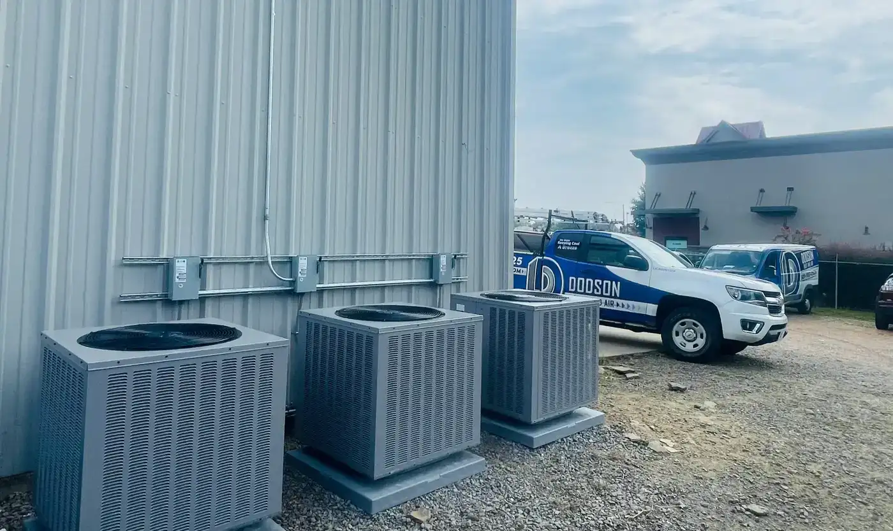
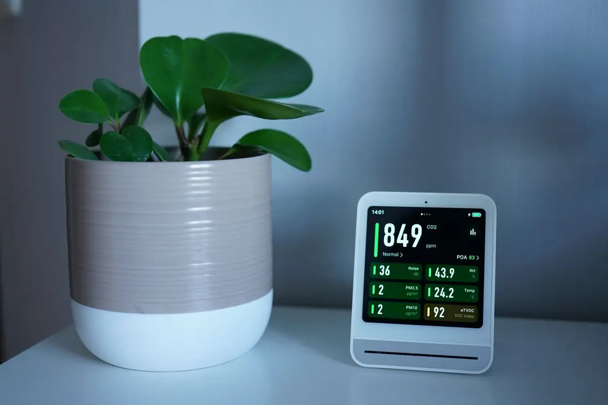

Searcy, AR · Central and Eastern Arkansas
We make keeping cool a breeze
HVAC installation, repairs and service from a reputable Central Arkansas HVAC contractor. Call for your free estimate.
HVAC services
When your air conditioner or furnace stops working, Dodson Heat and Air can help. We install, repair and maintain heating and cooling systems.
HVAC installation
Professional HVAC installation, including industrial installation, with personalized attention to your needs.
Learn more →
Air purifier installation
Air purifier installation by a team prepared to tackle even the most complex projects.
Learn more →
Filter maintenance and replacement
Filter maintenance and replacement to keep your system running.
Learn more →
Repairs and service
When your air conditioner or furnace stops working, Dodson Heat and Air can help.
Learn more →Why Dodson Heat and Air
A reputable HVAC contractor serving Central and Eastern Arkansas, with a 5.0 rating from 249 Google reviews.
- 5.0 rating from 249 Google reviews
- Personalized attention based on your specific needs
- Free estimate on request
- Referral rewards: refer a friend and get a reward of your choice
Serving Central and Eastern Arkansas
Little Rock, Jacksonville, Sherwood, Cabot, Beebe, Searcy, Conway, Heber Springs, Wynne and the surrounding areas.